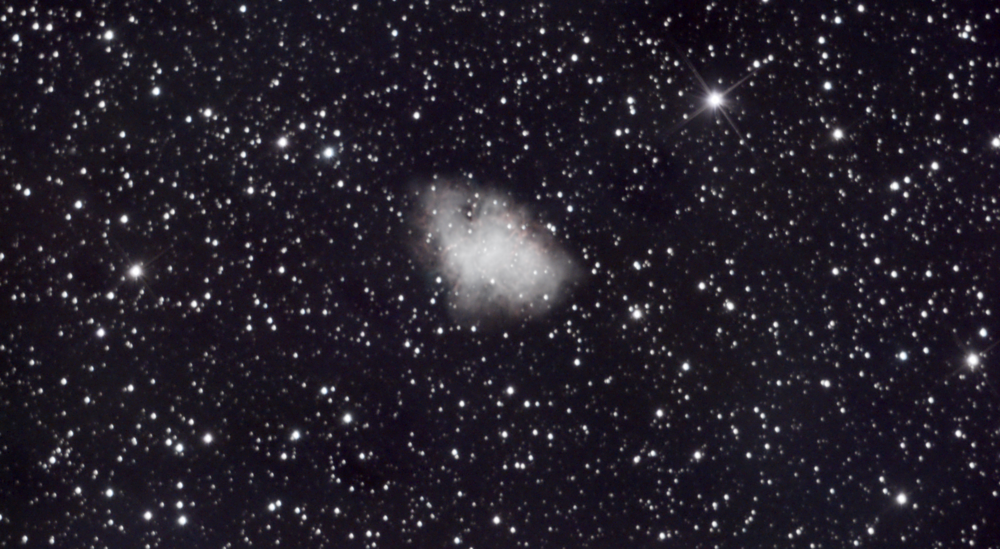
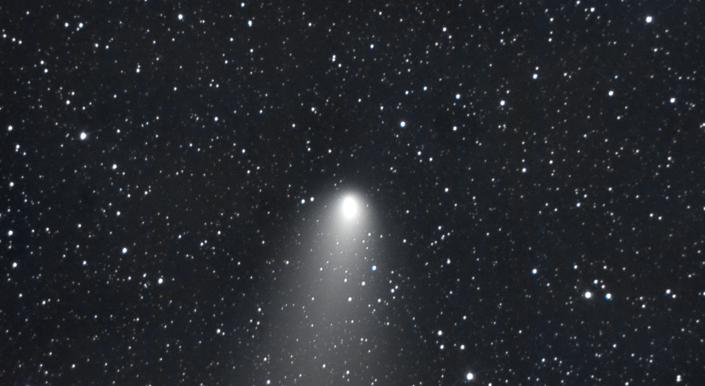
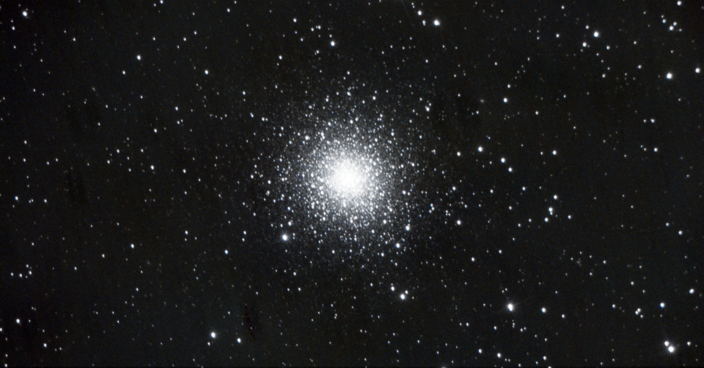
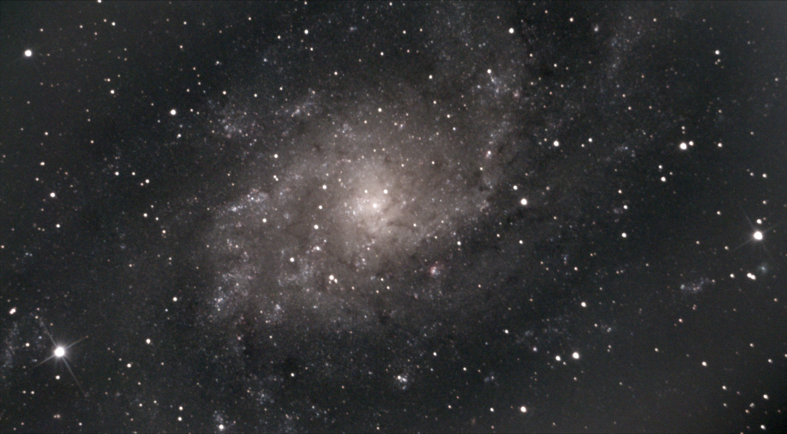
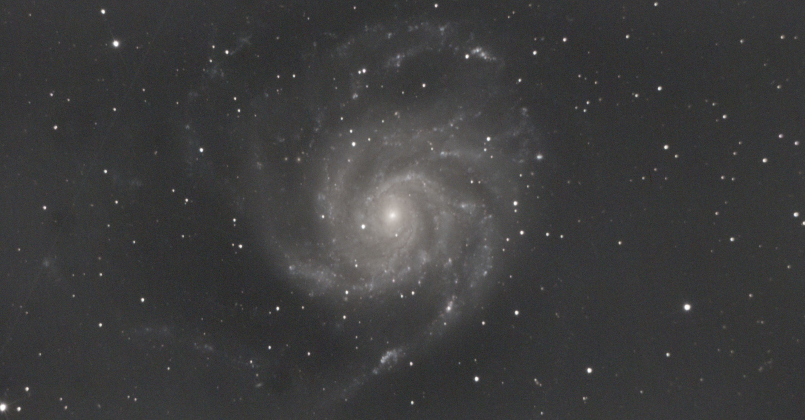
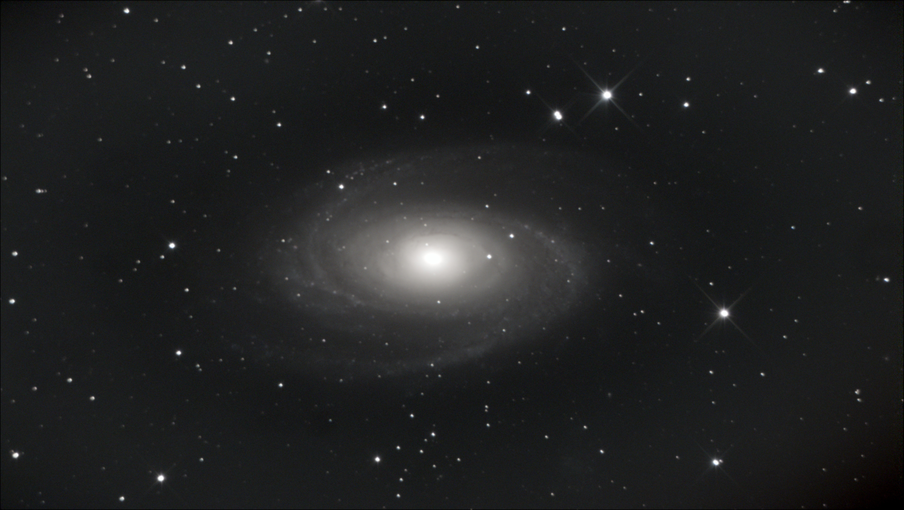

Data: 2024-11-07, luogo: 28061 Biandrate, autore: Giuseppe M., Skywatcher eq5 synscan pro, Svbony sv705c.

Data: 2024-11-07, luogo: 28061 Biandrate, autore: Giuseppe M., Skywatcher eq5 synscan pro, Svbony sv705c.

Data: 2024-11-02, luogo: 28061 Biandrate, autore: Giuseppe M., Skywatcher eq5 synscan pro, Svbony sv705c.

Data: 2024-09-15, luogo: 28061 Biandrate, autore: Giuseppe M., Skywatcher eq5 synscan pro, Svbony sv705c.

Data: 2024-08-11, luogo: 28061 Biandrate, autore: Giuseppe M., Skywatcher eq5 synscan pro, Svbony sv705c.

Data: 2024-07-14, luogo: N.D., autore: Giuseppe M., Skywatcher eq5 synscan pro, Svbony sv705c.